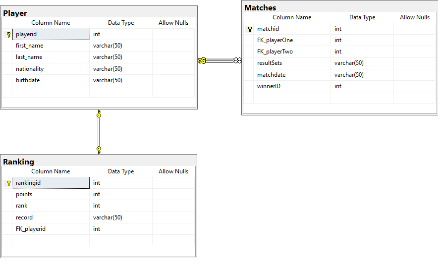

Beneath you will find a database diagram for the database you are accessing.

Return your assignment as .py file. If you use the built-in testing ground, make sure the file you name has .py at the end.
Your task is to do the following:
You are given a Python template in the Topic 6: Python to fill that has the following functions:
Your task is to fill the functions with the appropriate Python and SQL commands.
First three are worth 1 %, fourth, fifth and sixth are worth 2 %. Each function will have its own test case.